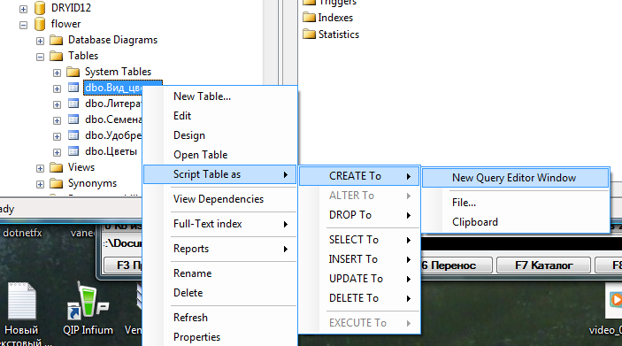

ЛАБОРАТОРНАЯ РАБОТА №4. РАЗРАБОТКА ТРЕБОВАНИЙ И КОНФИГУРИРОВАНИЕ КОРПОРАТИВНОЙ СЕТИ
1. ЦЕЛЬ И ЗАДАЧИ РАБОТЫ
Получить практический навык создания заполнения объектов БД средствами языка SQL.
В связи с этим задачами работы являются:
• изучение основных операторов языка определения и манипулирования данными;
• создание и выполнение запросов в среде Management Studio, обеспечивающих создание и заполнение таблиц данными.
2. ТЕОРЕТИЧЕСКИЕ ПОЛОЖЕНИЯ.
SQL (Structured Query Language, структурированный язык запросов) – это язык программирования, предназначенный для выборки и обработки информации, содержащейся в реляционной базе данных. SQL является стандартным языком для работы с реляционными базами данных, его основа реляционная алгебра и реляционное исчисление. SQL содержит набор стандартных операторов доступа к данными и манипулирования.
Существуют следующие версии SQL:
• SQL1 (принята в 1986 году, дополнена в 1989 году стандарт ANSI);
• SQL2 (SQL-92 принята в 1992 году);
• SQL3 (SQL-99 ) расширяет SQL2 за счет включения объектно-реляционных инструментов и новых функциональных возможностей.
Существуют версии SQL предлагаемые основными поставщиками СУБД, они, как правило, удовлетворяют требованиям ANSI, реализуют многие возможности SQL2 и имеют некоторые особенности.
SQL – это слабо структурированный язык, особенно по сравнению с такими высокоструктурированными языками, как С, Pascal или Java. В нем нет инструкции IF..THEN для проверки условий, нет инструкции GOTO для организации переходов и нет инструкций DO или FOR для создания циклов.
SQL обеспечивает независимость от конкретных СУБД: реляционную базу данных и программы, которые с ней работают, можно перенести с одной СУБД на другую с минимальными доработками и переподготовкой персонала. Все ведущие поставщики СУБД используют SQL.
Поставщики СУБД предлагают различные диалекты SQL позволяющие создавать самостоятельные программные модули, например, PL/SQL и Transact-SQL. В этих диалектах стандартный SQL дополнен инструкциями IF..THEN, GOTO и др., однако эти диалекты не получили статус стандарта и являются частными разработками отдельных компаний (PL/SQL применяется в СУБД Oracle, a Transact SQL – в СУБД MS SQL Server).
SQL не является отдельным программным продуктом. SQL – это неотъемлемая часть СУБД ее Манипуляционная часть, инструмент, с помощью которого осуществляется связь пользователя с БД.
Различают несколько групп операторов (подъязыки): I. Язык определения данных DDL.
К языку запросов относятся операторы
CREATE TABLE – создания нового отношения;
DROP TABLE – удаление отношения;
ALTER TABLE – изменение структуры таблицы;
CREATE VIEW – создания представления;
DROP VIEW – удаления представления;
CREATE INDEX – удаление индексов.
II. Язык манипулирования данными DM (команды, DELETE, INSERT, UPDATE )
III. Язык запросов DQL (оператор SELECT) IV. Средства управления транзакциями.
V. Средства администрирования данными.
Используемы в SQL типы данных аналогичны применяемым в других языках программирования (смотрим практическую работу 1)
Значение NULL и его применение.
Атрибутам отношения или переменным SQL допускает присвоение специального значения NULL.
Значение NULL имеет следующий смысл:
- значение не известно, то есть когда создается новый кортеж, а значение некоторого атрибута явно не задается и не заданно по умолчанию, то ему присваивается данное значение;
- значение не может быть заданно, то есть когда значения некоторого атрибута быть не может (например, атрибут Супруг, для некоторого кортежа отношения Сотрудники, когда рассматриваемый сотрудник не женат); значение умалчивается, то есть, если значение атрибута, выдается по запросу, но данный атрибут запрещен для просмотра для данного источника запроса.
Если атрибут или выражение со значением NULL участвует в арифметической операции, то результат операции будет иметь значение NULL.
При сравнении выражения, имеющего значение NULL с другим выражением с помощью операций сравнения (=, !=, <>, <, >, >=, <=, !> ,!<) результат будет иметь значение unknown.
Для проверки выражения на значение NULL операция сравнения не используется. Для Этого необходимо использовать специальный предикат IS NULL (IS NOT NULL), он будет рассмотрен ниже.
3.Операторы языка определения данных ddl и модификации отношений
Оператор задания схемы отношения, то есть, создаѐт отношения (таблицы) – и их атрибуты.
Общий формат оператора
Create table ИмяОтн(Аtr1 ТипАтр [ЗначПоУмолч] [ОгрАтр] …, Аtr2 …], … ОгрКортежа),
где
- Atr1, Atr2 – идентификаторы (имена) атрибутов отношения;
- ЗначПоУмолч– значение, присваиваемое атрибуту по умолчанию;
- ОгрАтр– ограничения на значение атрибута (будут рассмотрены позже;
- ОгрКортежа– ограничения на значение корежа (будут рассмотрены позже;
Оператор удаление отношения
DroptableИмяОтнМодификация отношений
Модификация отношения может быть следующих разновидностей:
удаление атрибута
Alter table ИмяОтн drop ИмяАтр1 – из отношения ОТН будет удалѐн атрибут именем ИмяАтр1;
вставка атрибута
AltertableИмяОтнaddИмяАтр1типАтр1ЗначПоУмолч]..,где ИмяАтр1 типАтр1 [ЗначПоУмолч]..– описание атрибута, аналогичное используемому в операторе Createtable
Операторы SQL манипулирования данными
Операторы данной группы позволяют модифицировать существующие кортежи отношений. То есть, вставлять новые кортежи отношения, удалять, изменять значений атрибутов.
Вставка кортежей (INSERT)
insert into ИмяОтн(ИмяАтр1, ИмяАтр2, ..) values(знач1, знач2,…)В результате выполнения данной команды в отношение с именем ИмяОтнбудет вставлен кортеж, при этом атрибутам с именами ИмяАтр1, ИмяАтр2…будут присвоены значения знач1, знач2,… Атрибутам, не перечисленным в списке, будет присвоено значение по умолчанию. Если значения по умолчанию не заданы, то система попытается присвоить им значения NULL.
Удаление кортежей
deletefromимяОтнwhereусловиеПри выполнении данной команды из отношения с именем имя-Отнбудут удалены кортежи, значение атрибутов которых будет соответствовать условию.
Модификация (обновление) кортежей
update ИмяОтн set ИмяАтр1= знач1, ИмяАтр1= знач1 [,…] whereусловиеПри выполнении данной команды кортежам, отвечающим заданным условиям будет изменено значение заданных атрибутов.
Изменение атрибутов будет отменено, если они противоречат условиям целостности базы данных, или другим ограничениям. Для работы с объектами СУБД MS SQL Server Menegment Studio предоставляет набор команд контекстного меню, в частности для работы с таблицами может использоваться иерархия контекстных меню, показанная на рис. 2.1.

. Рис. 4.1 Иерархия команд контекстного меню для работы с таблицами
Команда меню Script table as позволяет создавать шаблоны команд для создания, удаления, вставки кортежей и для выполнения других действий с таблицами.
Созданные команды можно сохранять во внешних файлах, с расширением SQL.
3. ПОРЯДОК ВЫПОЛНЕНИЯ И ЗАДАНИЕ
Заданием на лабораторную работу является формирование команд SQL, обеспечивающих создание таблиц, аналогичных полученным в результате выполнения лабораторной работы №1 и заполнение этих таблиц данными. Для создания команд можно воспользоваться шаблонами, получаемыми на с помощью контекстного меню.
Примерный порядок выполнения работы может быть следующим.
1. Создать запросы для создания таблиц с использованием контекстного меню соответствующей таблицы. Скорректировать запросы, изменив имя таблицы (можно добавить слеш в конце имени). Например, старая таблица Nomeklatura, создаваемая – Nomenklatura_
2. Создать запросы для вставки в таблицы значений. Использовать контекстное меню для создания запросов, при необходимости вопросы нужно скорректировать, так чтобы в таблицы вводились тестовые значения, введенные в аналогичных существующих таблицах.
3. Сформировать два файла запросов, первый содержит команды по созданию таблиц, второй по заполнению.
4. Создать файл, содержащий команды по удалению созданных таблиц.
5. Выполнить запросы создания, заполнения. Показать преподавателю результаты. Выполнить запрос по удалению. Показать преподавателю результаты.
6. Подготовить отчет. В отчет включить описание процесса создания запросов и тексты запросов и скриншоты отображающие структуру и состав полученных таблиц.
3. КОНТРОЛЬНЫЕ ВОПРОСЫ
1. Назовите основные операторы языка определения данных. 2. Формат оператора SQL, используемого для создания отношений.
3. Какие операторы SQL позволяют менять состав атрибутов отношений?
4. Основные операторы языка модификации отношений.
5. Каким образом с помощью операторов SQL изменить тип атрибута в заполненной таблице?